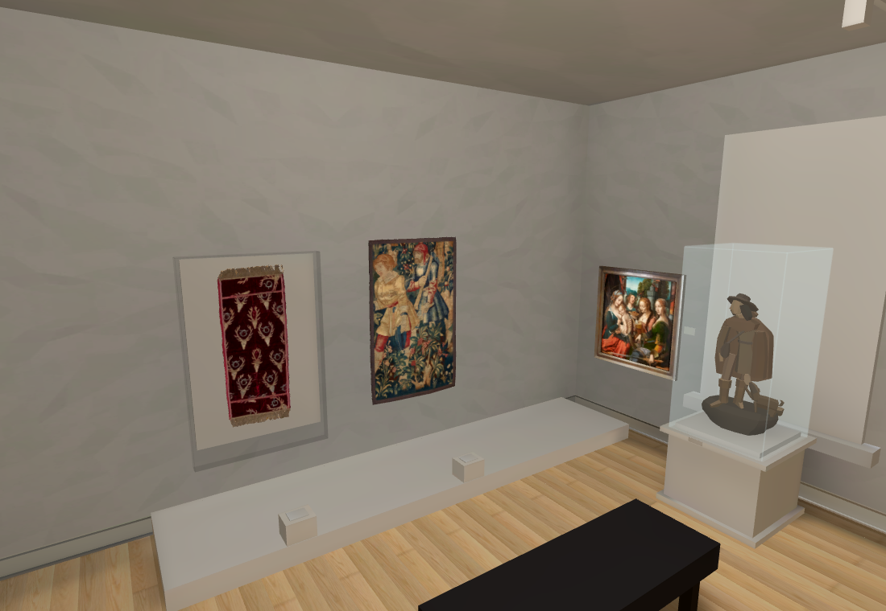
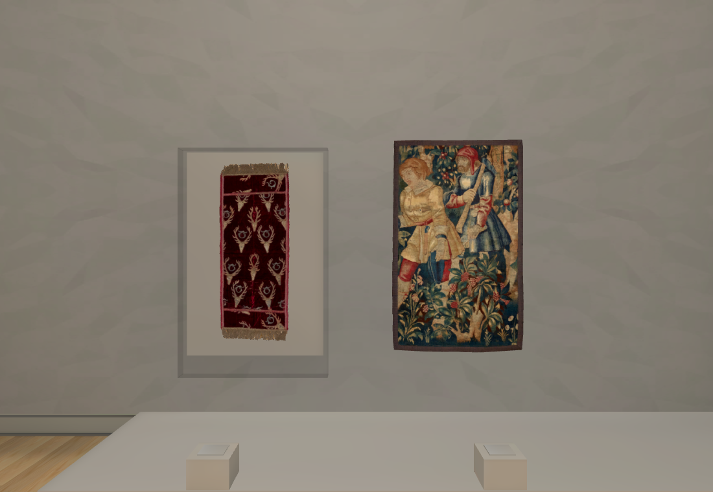
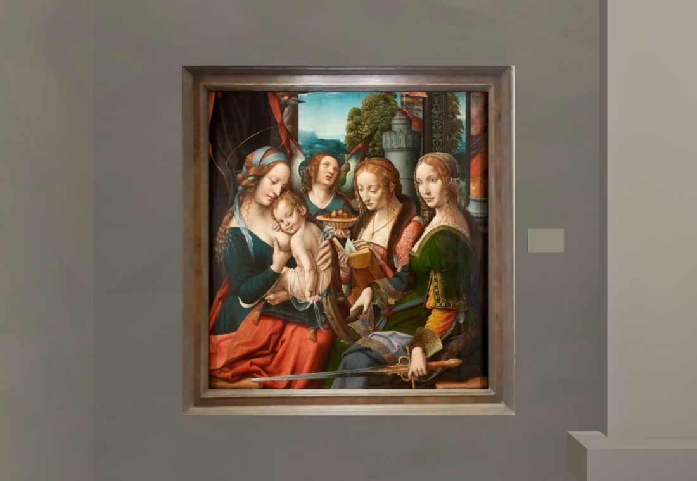
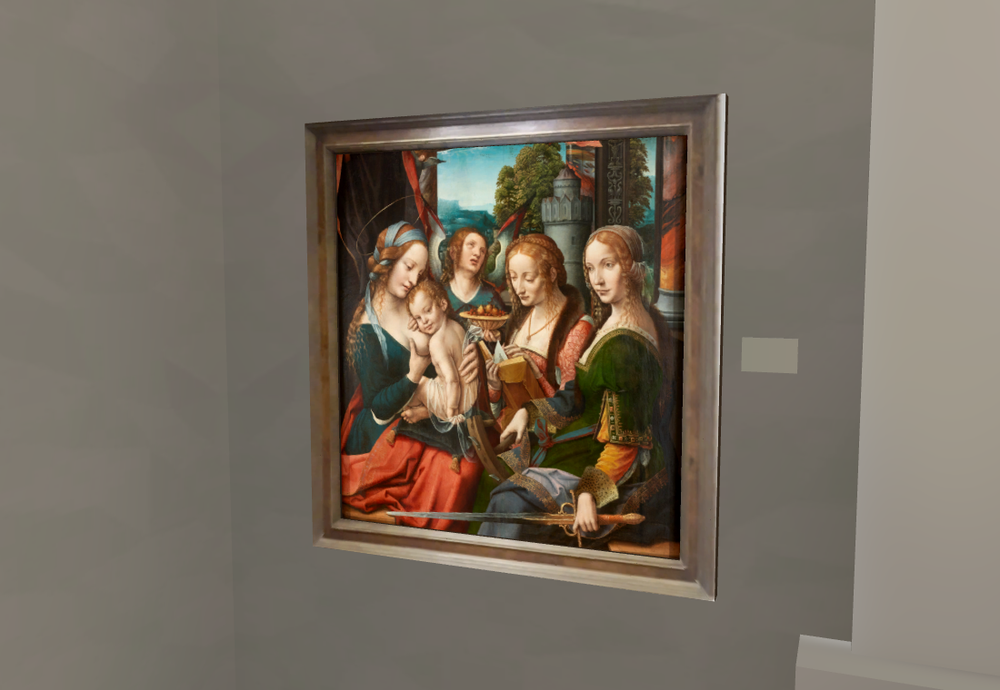
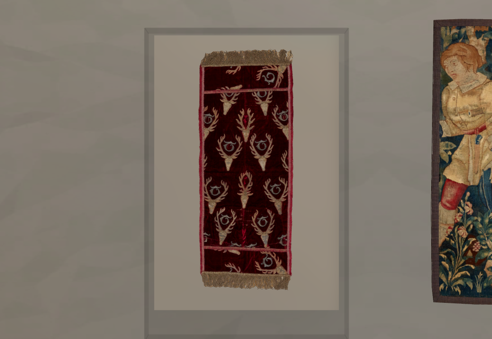
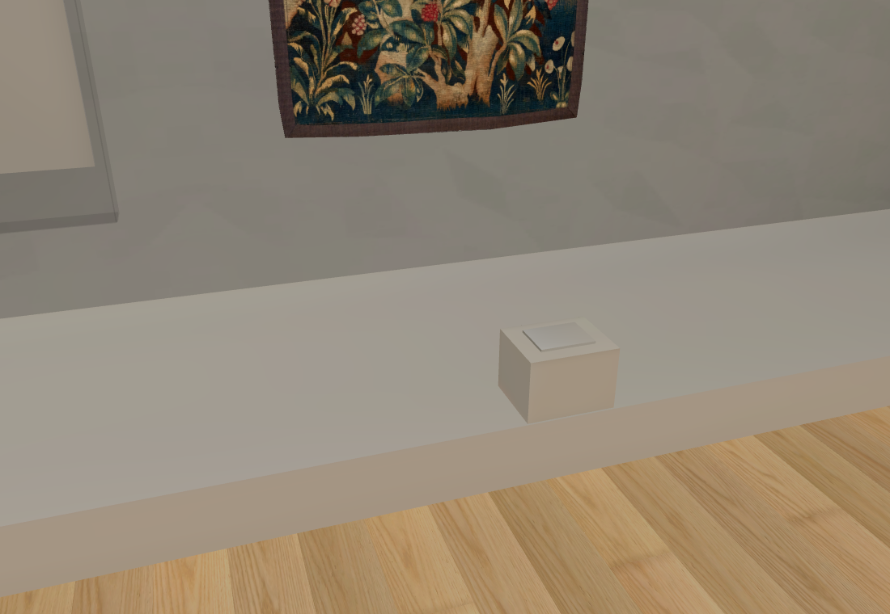
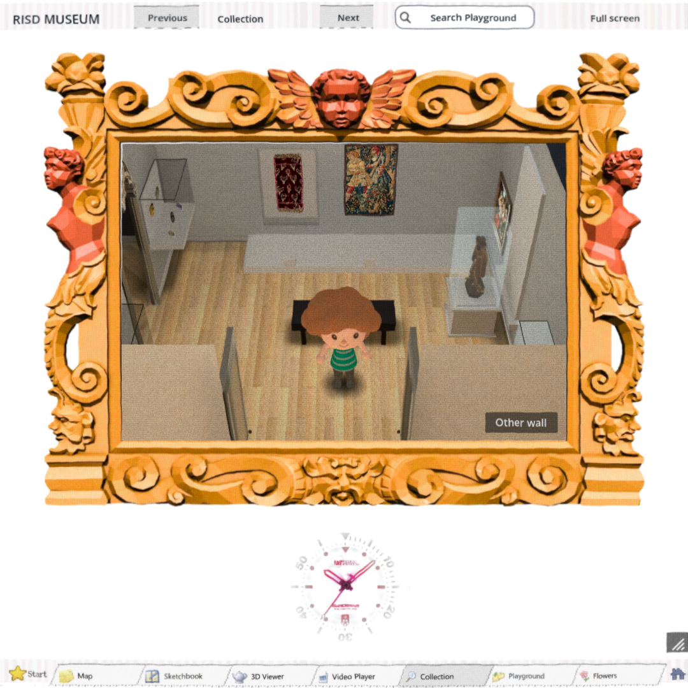
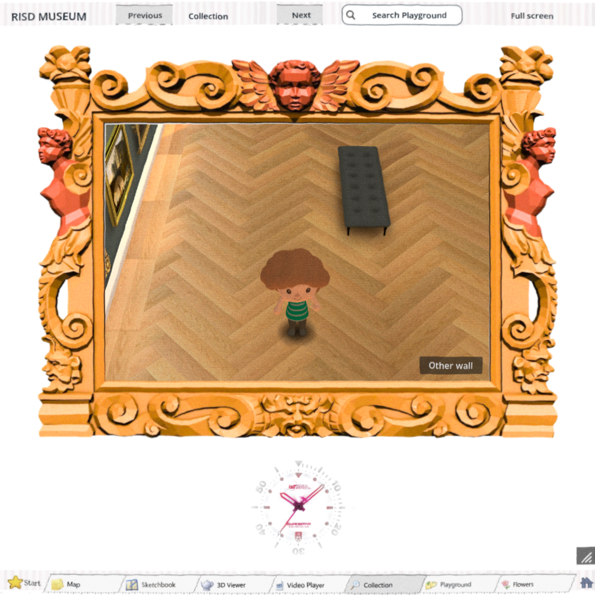

Two textiles and the framed Madonna added to the existing connected room. The works now hang lower, the platform is deeper and shorter, and the west window extends down to the height seen in the wide video shots. These are new native Godot screenshots with freshly baked room lighting.
The original Main Hall remains in the build. The room check passes for three wall works and eleven east-case objects. Opus independently verified the doorway key, tap and frame cutaway fixes; Opus independently verified the four placement corrections against the original video. Opus approval covers the relative layout in the unbaked source comparison; the final baked lighting has been inspected by the main worker. Room measurements and fine model fidelity remain provisional. Off-centre floor clicks, camera, lighting and final object fidelity remain open.
The artworks use RISD catalogue photographs. The Madonna frame uses original-video texture strips: the Muse frame trial added too much gold and was rejected. No repeat paid call. The sculptures are still provisional low-polygon studies.
Eleven objects in the east cases · Connected Hall screenshots








Opus review: footage, earlier build, corrected build.